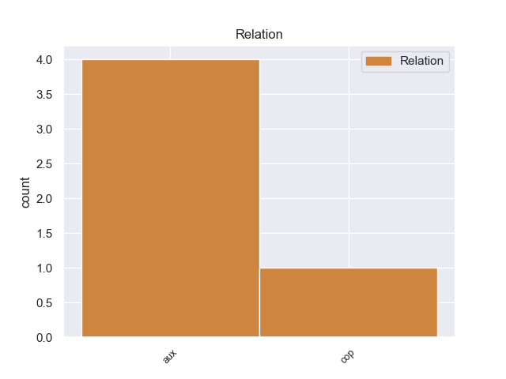
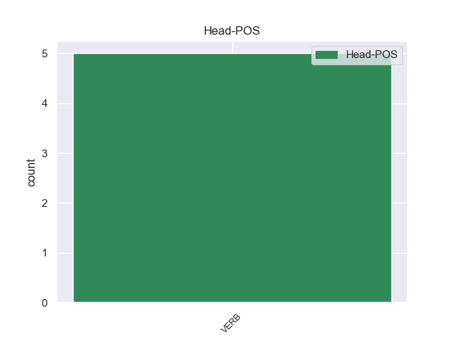
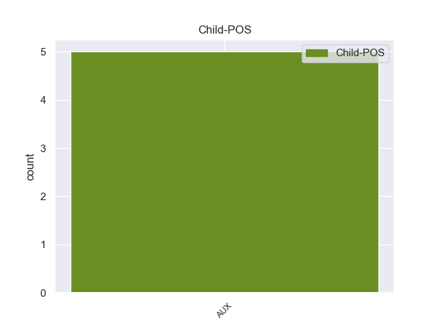

Distribution of features within this leaf



Agreement Rules sorted by frequency.
- When the dependent token is the auxiliary(aux) of the head token, and the dependent token is AUX.
1 Da _ _ _ _ 0 _ _ _
2 quale _ _ _ _ 0 _ _ _
3 musical _ _ _ _ 0 _ _ _
4 di _ _ _ _ 0 _ _ _
5 Broadway _ _ _ _ 0 _ _ _
6 è essere AUX VA Mood=Ind|Number=Sing|Person=3|Tense=Pres|VerbForm=Fin 7 aux 7:aux _
7 tratta trattare VERB V Mood=Ind|Number=Sing|Person=3|Tense=Pres|VerbForm=Fin 0 _ _ _
8 la _ _ _ _ 0 _ _ _
9 canzone _ _ _ _ 0 _ _ _
10 " _ _ _ _ 0 _ _ _
11 The _ _ _ _ 0 _ _ _
12 Story _ _ _ _ 0 _ _ _
13 is _ _ _ _ 0 _ _ _
14 me _ _ _ _ 0 _ _ _
15 " _ _ _ _ 0 _ _ _
16 ? _ _ _ _ 0 _ _ _
Disagree Examples:
1 finire _ _ _ _ 0 _ _ _
2 spesso _ _ _ _ 0 _ _ _
3 , _ _ _ _ 0 _ _ _
4 troppo _ _ _ _ 0 _ _ _
5 spesso _ _ _ _ 0 _ _ _
6 , _ _ _ _ 0 _ _ _
7 su _ _ _ _ 0 _ _ _
8 le _ _ _ _ 0 _ _ _
9 pagine _ _ _ _ 0 _ _ _
10 di _ _ _ _ 0 _ _ _
11 i _ _ _ _ 0 _ _ _
12 giornali _ _ _ _ 0 _ _ _
13 per _ _ _ _ 0 _ _ _
14 eventi _ _ _ _ 0 _ _ _
15 misteriosi _ _ _ _ 0 _ _ _
16 , _ _ _ _ 0 _ _ _
17 oppure _ _ _ _ 0 _ _ _
18 per _ _ _ _ 0 _ _ _
19 fatti _ _ _ _ 0 _ _ _
20 che _ _ _ _ 0 _ _ _
21 nessuno _ _ _ _ 0 _ _ _
22 vorrebbe volere AUX VM Mood=Cnd|Number=Sing|Person=3|Tense=Pres|VerbForm=Fin 23 aux 23:aux _
23 accadessero accadere VERB V Mood=Sub|Number=Plur|Person=3|Tense=Imp|VerbForm=Fin 0 _ _ _
24 in _ _ _ _ 0 _ _ _
25 la _ _ _ _ 0 _ _ _
26 sua _ _ _ _ 0 _ _ _
27 città _ _ _ _ 0 _ _ _
28 . _ _ _ _ 0 _ _ _
1 Berlusconi _ _ _ _ 0 _ _ _
2 si _ _ _ _ 0 _ _ _
3 è essere AUX VA Mood=Ind|Number=Sing|Person=3|Tense=Pres|VerbForm=Fin 4 aux 4:aux _
4 impegnato impegnare VERB V Mood=Imp|Number=Sing|Person=2|Tense=Pres|VerbForm=Fin 0 _ _ _
5 a _ _ _ _ 0 _ _ _
6 sviluppar _ _ _ _ 0 _ _ _
7 li _ _ _ _ 0 _ _ _
8 ulteriormente _ _ _ _ 0 _ _ _
9 , _ _ _ _ 0 _ _ _
10 elaborando _ _ _ _ 0 _ _ _
11 per _ _ _ _ 0 _ _ _
12 i _ _ _ _ 0 _ _ _
13 prossimi _ _ _ _ 0 _ _ _
14 giorni _ _ _ _ 0 _ _ _
15 qualcosa _ _ _ _ 0 _ _ _
16 di _ _ _ _ 0 _ _ _
17 più _ _ _ _ 0 _ _ _
18 compiuto _ _ _ _ 0 _ _ _
19 , _ _ _ _ 0 _ _ _
20 su _ _ _ _ 0 _ _ _
21 cui _ _ _ _ 0 _ _ _
22 Bonino _ _ _ _ 0 _ _ _
23 e _ _ _ _ 0 _ _ _
24 Pannella _ _ _ _ 0 _ _ _
25 possano _ _ _ _ 0 _ _ _
26 avanzare _ _ _ _ 0 _ _ _
27 le _ _ _ _ 0 _ _ _
28 loro _ _ _ _ 0 _ _ _
29 controproposte _ _ _ _ 0 _ _ _
30 . _ _ _ _ 0 _ _ _
1 Per _ _ _ _ 0 _ _ _
2 realizzare _ _ _ _ 0 _ _ _
3 queste _ _ _ _ 0 _ _ _
4 indicazioni _ _ _ _ 0 _ _ _
5 il _ _ _ _ 0 _ _ _
6 Ministro _ _ _ _ 0 _ _ _
7 si _ _ _ _ 0 _ _ _
8 è essere AUX VA Mood=Ind|Number=Sing|Person=3|Tense=Pres|VerbForm=Fin 9 aux 9:aux _
9 impegnato impegnato VERB V Mood=Imp|Number=Sing|Person=2|Tense=Pres|VerbForm=Fin 0 _ _ _
10 a _ _ _ _ 0 _ _ _
11 dare _ _ _ _ 0 _ _ _
12 più _ _ _ _ 0 _ _ _
13 soldi _ _ _ _ 0 _ _ _
14 a _ _ _ _ 0 _ _ _
15 gli _ _ _ _ 0 _ _ _
16 enti _ _ _ _ 0 _ _ _
17 locali _ _ _ _ 0 _ _ _
18 . _ _ _ _ 0 _ _ _
1 Alcuni _ _ _ _ 0 _ _ _
2 titoli _ _ _ _ 0 _ _ _
3 di _ _ _ _ 0 _ _ _
4 le _ _ _ _ 0 _ _ _
5 nuove _ _ _ _ 0 _ _ _
6 canzoni _ _ _ _ 0 _ _ _
7 sono essere AUX V Mood=Ind|Number=Plur|Person=3|Tense=Pres|VerbForm=Fin 8 cop 8:cop _
8 Vai andare VERB V Mood=Imp|Number=Sing|Person=2|Tense=Pres|VerbForm=Fin 0 _ _ _
9 e _ _ _ _ 0 _ _ _
10 vai _ _ _ _ 0 _ _ _
11 e _ _ _ _ 0 _ _ _
12 vai _ _ _ _ 0 _ _ _
13 , _ _ _ _ 0 _ _ _
14 Portati _ _ _ _ 0 _ _ _
15 via _ _ _ _ 0 _ _ _
16 , _ _ _ _ 0 _ _ _
17 Fragile _ _ _ _ 0 _ _ _
18 , _ _ _ _ 0 _ _ _
19 Se _ _ _ _ 0 _ _ _
20 , _ _ _ _ 0 _ _ _
21 Fra _ _ _ _ 0 _ _ _
22 mille _ _ _ _ 0 _ _ _
23 anni _ _ _ _ 0 _ _ _
24 . _ _ _ _ 0 _ _ _